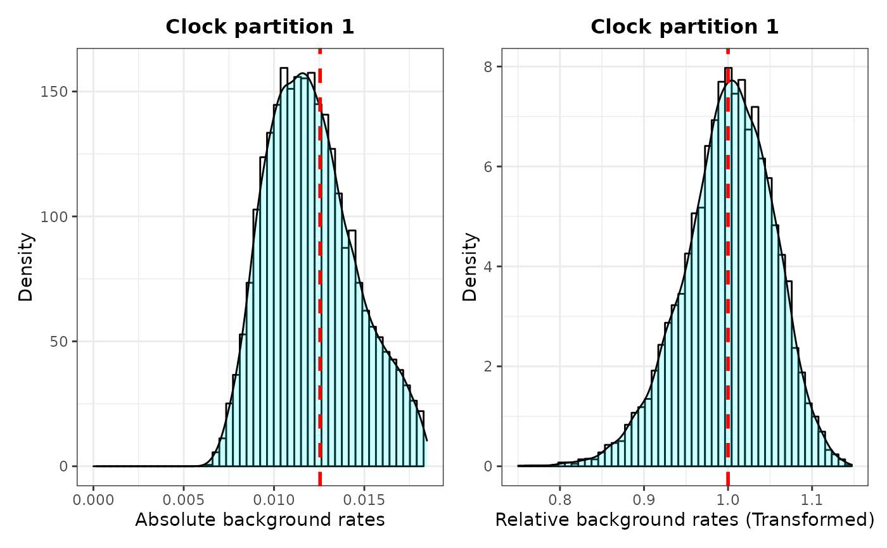

Plots distribution of background rates extracted from posterior log files.
plot_back_rates.RdPlots The distribution of background rates extracted from the posterior log files from Mr. Bayes or BEAST2, as well as the distribution of background rates if log transformed to test for normality of data distribution.
Arguments
- type
Whether to use data output from "Mr.Bayes" or "BEAST2".
- posterior
A data frame of posterior parameter estimates (log file). From Mr.Bayes, it includes a "clockrate" column indicating the mean (background) clock rate estimate for each generation that will be used for pairwise t-tests. Such data frame can be imported using
combine_log(no need to reshape from wide to long). See theposterior1porposterior3pdatasets for an examples of how the input file should look. From BEAST2, it will include at least one "rate<filename>.mean" column indicating the mean (background) clock rate estimate for each generation. If there are "P" unlinked clock partitions in BEAST2, there will be P x "rate<filename>.mean" columns (one for each partition) in the posterior log file.- clock
The clock partition number to calculate selection mode. Ignored if only one clock is available.
- trans
Type of data transformation to perform on background rates extracted from the posterior log file from Mr. Bayes or BEAST2. Options include "none" (if rates are normally distributed), natural log transformation "log", and log of base 10 transformation "log10". The necessity of using data transformation can be tested using the function
plot_back_rates.- size
Font size for title of plot
- quantile
Upper limit for X axis (passed on to 'xlim') to remove outliers from histogram. The quantile can be any value between "0" and "1", but values equal or above "0.95" provide good results in most cases in which the data distribution is right skewed.
Details
Plots The distribution of background rates extracted from the posterior log files from Mr. Bayes or BEAST2, as well as the distribution of background rates if log transformed. Background rates should be normally distributed for meeting the assumptions of t-tests and other tests passed on by downstream functions, including get_pwt_rates_MrBayes, get_pwt_rates_BEAST2, and plot_treerates_sgn.
Value
It produces a ggplot object that can be manipulated using ggplot2 syntax (e.g., to change the theme or labels).
Examples
# See vignette("rates-selection") for how to use this
# function as part of an analysis pipeline
## MrBayes example
# Load example tree and posterior
data("posterior3p")
P <- plot_back_rates (type = "MrBayes", posterior3p, clock = 1,
trans = "log10", size = 10, quantile = 0.95)
P
#> `stat_bin()` using `bins = 30`. Pick better value with `binwidth`.
#> Warning: Removed 500 rows containing non-finite values (stat_bin).
#> Warning: Removed 500 rows containing non-finite values (stat_density).
#> Warning: Removed 2 rows containing missing values (geom_bar).
#> `stat_bin()` using `bins = 30`. Pick better value with `binwidth`.
